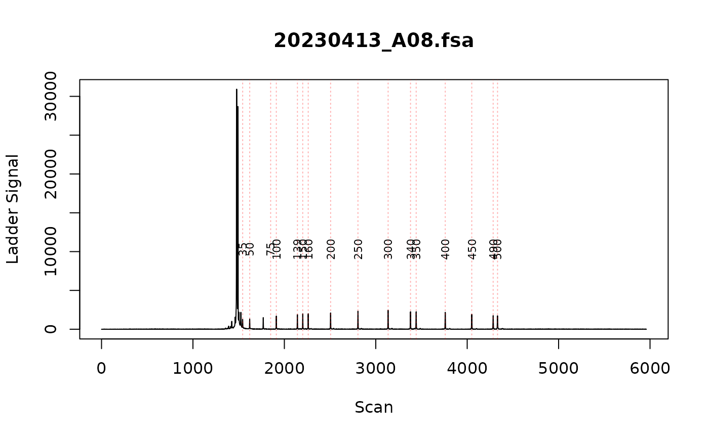

Fix ladders interactively
fix_ladders_interactive.RdAn app for fixing ladders
Details
This function helps you fix ladders that are incorrectly assigned. Run fix_ladders_interactive()
and provide output from find_ladders. In the app, for each sample, click on
line for the incorrect ladder size and drag it to the correct peak.
Once you are satisfied with the ladders for all the broken samples, click the download
button to generate a file that has the ladder correction data. Read this file
back into R using readRDS, then use fix_ladders_manual() and supply the ladder
correction data as ladder_df_list. This allows the manually corrected data to
be saved and used within a script so that the correct does not need to be done
every time.
Examples
fsa_list <- lapply(cell_line_fsa_list["20230413_B03.fsa"], function(x) x$clone())
find_ladders(fsa_list, show_progress_bar = FALSE)
# to create an example, lets brake one of the ladders
brake_ladder_list <- list(
"20230413_B03.fsa" = data.frame(
size = c(35, 50, 75, 100, 139, 150, 160, 200, 250, 300, 340, 350, 400, 450, 490, 500),
scan = c(1555, 1633, 1783, 1827, 2159, 2218, 2278, 2525, 2828, 3161, 3408, 3470, 3792,
4085, 4322, 4370)
)
)
fix_ladders_manual(
fsa_list,
brake_ladder_list
)
#> Fixing ladder for 20230413_B03.fsa
#> Warning: sample 20230413_B03.fsa has badly fitting ladder for bp sizes: 50-100, 75-139, 100-150
plot_ladders(fsa_list)

if (interactive()) {
fix_ladders_interactive(test_ladders_broken)
}
# once you have corrected your ladders in the app,
# export the data we need to incorporate that into the script:
# ladder_df_list <- readRDS('path/to/exported/data.rds')
# test_ladders_fixed <- fix_ladders_manual(test_ladders_broken, ladder_df_list)
# plot_ladders(test_ladders_fixed["20230413_B03.fsa"],
# n_facet_col = 1)